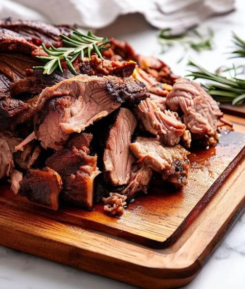

Nyama Choma Recipe

Nyama Choma
Nyama Choma, a Swahili term that translates to ”burnt meat” ”roasted meat”, or “grilled meat,” is a popular East African dish, particularly in countries such as Kenya, Tanzania, and Uganda. It consists of grilled or roasted meat, typically beef or goat, which is seasoned with a mix of spices and served with a side of vegetables or ugali, a type of cornmeal porridge.
Nyama Choma is more than just a delicious East African dish – it is a cultural icon that brings people together and represents a shared culinary heritage. Its simplicity in preparation combined with its bold, smoky flavors has made it a beloved delicacy that continues to entice both locals and visitors alike. Beyond its sumptuous taste, Nyama Choma plays a significant role in the social fabric of East African communities. It is a symbol of hospitality and friendship, often shared among friends and family during celebrations and gatherings.
Ingredients
- 2 pounds meat preferably goat or beef
- 1/2 cup water
- 4 cloves garlic minced
- 1 tablespoon grated ginger
- 1/2 tablespoon paprika
- 1 teaspoon curry powder
- 1 teaspoon rosemary leaves minced
- 1 teaspoon bouillon powder or 1 tablespoon soy sauce
- 1/4 teaspoon cayenne pepper or add to taste – optional
- 1/4 cup vegetable oil
- 1/4 cup lemon juice freshly squeezed
- salt and pepper to taste
Steps
- In a large mixing bowl, combine the water, minced garlic, grated ginger, paprika, curry powder, rosemary, bouillon powder, cayenne pepper, lemon juice, vegetable oil, salt and pepper to taste. Whisk thoroughly to create a well-blended marinade.
- Place the meat in the bowl of marinade ensuring that all pieces of meat are well coated.
- Cover the meat with plastic wrap and refrigerate for at least 2 hours, ideally overnight, to allow the flavors to penetrate and tenderize the meat.
- Preheat your grill to medium-high heat. If using coals, ensure they are evenly distributed and fully heated before cooking.
- Place the meat on the grill, positioning them over direct heat. Grill the meat for 20-25 minutes for goat or beef occasionally to ensure even cooking. Baste the meat with any remaining marinade during the grilling process to keep it moist and flavorful.
- Check the meat for doneness by cutting into a piece – it should be slightly pink in the center for goat and beef, or fully cooked through for chicken and pork. Adjust the grilling time as needed.
- Remove the meat from the grill and allow it to cool for a few minutes before serving.
- Serve your delicious Nyama Choma with your choice of accompaniments, such as Ugali and Kachumbari.